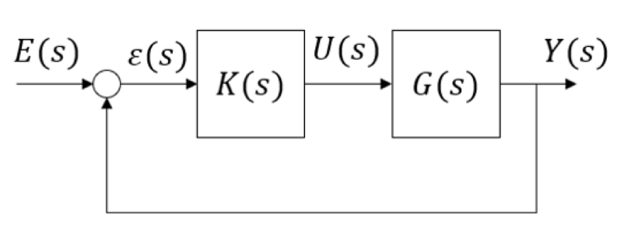
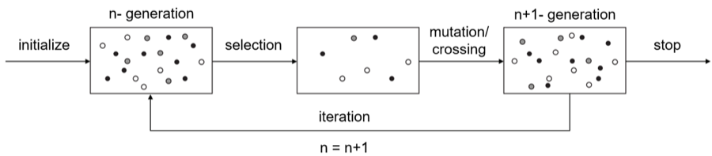
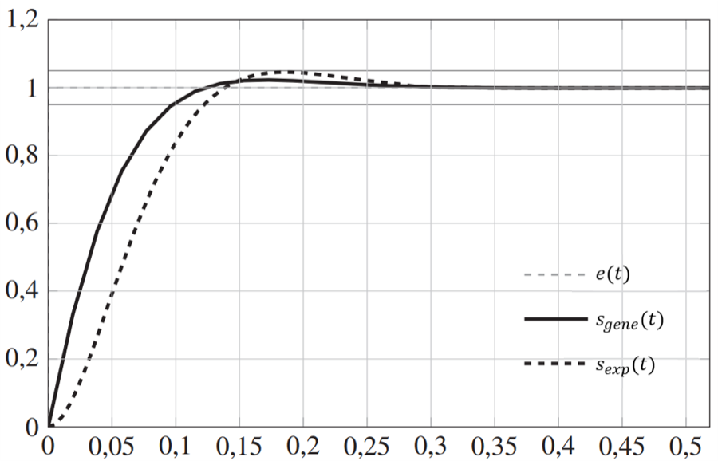

Course project · ENSTA Bretagne
Optimizing a PID controller with a genetic algorithm
The problem
PID controllers dominate industry because they are easy to implement and behave intuitively. Tuning them is the awkward part — meeting accuracy, response time and overshoot targets together is usually done by more or less empirical methods. This project replaces the empiricism with a search.

The test plant is third order:
\[ G(s) = \frac{8}{1 + 1.13\,s + 0.273\,s^2 + 0.0072\,s^3} \]Uncorrected (\(K(s) = 1\)) it has steady-state error, roughly 1.8 s response time, oscillation and large overshoot. A standard pole-compensation tuning gives \(K_p = 2.33\), \(T_i = 1.1\) s, \(T_d = 0.218\) s — a response that already looks well tuned. That is the baseline to beat.
Defining "better"
The usual criteria are 5% settling time, overshoot, and zero steady-state error. To capture the shape of the transient as well, the project adds the integral of absolute error:
\[ \gamma = \int_0^{\infty} |\varepsilon(t)|\,dt \]The pole-compensation baseline scores \(t_5 = 0.123\), \(OS = 0.05\), \(\gamma = 0.0733\). These three become the reference values in a single cost function \(\kappa\), which the algorithm minimises. Candidate gains are encoded as three 16-bit integers \(I_p, I_i, I_d\), and an unstable closed loop is simply assigned a cost of 100.
Why not just try everything? Three 16-bit integers give \(2^{48}\) combinations. One evaluation takes about 10.3 ms, so an exhaustive search would run for roughly 92,000 years. That number is the whole justification for using a heuristic.
The genetic algorithm

A population of 100 candidates; each generation keeps the best 20 and crosses them to generate 80 new ones, holding the population constant. Selection pressure does the rest.
Result

| Method | Settling time \(t_5\) | Overshoot |
|---|---|---|
| Pole compensation | 0.14 s | 5% |
| Genetic algorithm | 0.10 s | 2% |
Roughly 50 generations were enough to converge — about 5,000 evaluations against the \(2^{48}\) a brute-force search would need. The improvement is modest in absolute terms, which is the honest reading: pole compensation is a good method, and the interesting result is that a generic search reaches a better optimum without any control-theoretic insight about this particular plant.